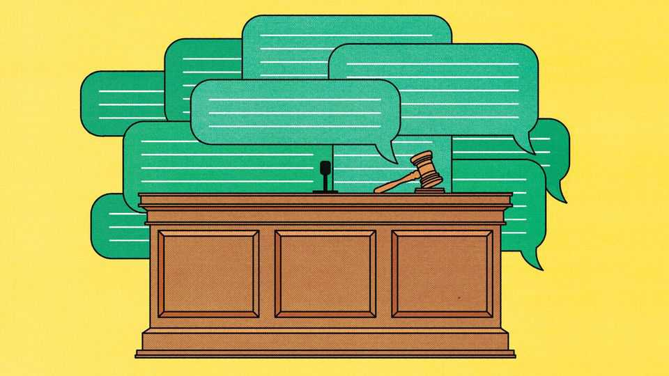
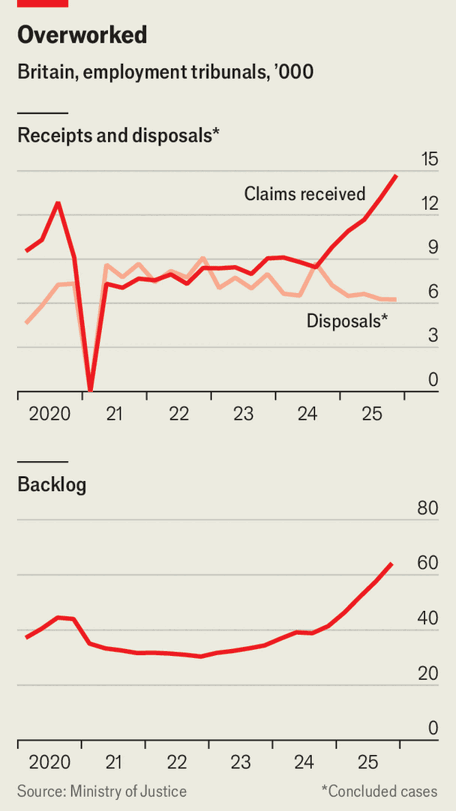

The tragedy of the commons, AI edition
Britain’s employment courts are clogged with AI cases

Aug 6th 2026
British employment law contains a provision called “interim relief”, an emergency measure under which a judge can order a firm to reinstate a fired employee, or at least pay their wages. The subject may be a whistleblower who has complained of safety breaches, or a troublesome trade-union official. Little known outside legal circles, this provision has been sought infrequently—across Britain tribunals used to get about 20 applications a year—and rarely granted.
Until recently. Data are patchy, but the surge is unmistakable. Now, around 20 applications are lodged each month in each of the 12 regional offices of Britain’s employment-tribunal system—a more than 100-fold increase—according to a memo on June 22nd by Barry Clarke and Susan Walker, the two presidents of the system. Most of these efforts will eventually fail, but all properly filed ones are entitled to an emergency hearing and their day in court, causing delays to other cases. Judges are cautious folk but they have a prime suspect: artificial intelligence.
Interim relief is a case study of how AI, like a heat-seeking missile, can lock on to the most obscure provisions of the law—and create carnage. The impact on Britain’s employment tribunals (courts that resolve disputes between employers and workers) illustrates a phenomenon emerging everywhere. AI-induced demand is overwhelming bureaucracies built for the analogue age—from Dutch municipal-tax appeals to the Canadian privacy regulator to parking-ticket tribunals in every major city. In Britain workers now ask large language models, rather than human lawyers, to help them sue their bosses quickly and cheaply. Claims have surged and backlogs grown. A case filed today may not be heard until 2030.
Free, AI-powered legal advice should be good news for workers. Instead, it is proving to be a tragedy of the commons. For workers with genuine grievances, the surge in demand means longer waits for justice. For employers, it means bigger legal bills to respond to claims, both well-founded or fantastical. In the age of AI, a system intended to provide access to justice suffers from, if anything, too much access.
This dynamic takes a twist in Britain, where technology and the law are moving out of step. As AI’s capacity accelerates, the Labour government is giving workers more grounds and bigger rewards for suing their employers. This means that just as demand by AI-empowered claimants is surging, the door to the court is being pushed open wider by the government.

The impact of the technology-enabled surge is striking. The number of people filing claims against their employer rose by 39% in the year to March 2026 compared with the previous year, to 50,000, while the rate of cases being resolved or rejected fell. Claims are getting more complex: the share of “open track” ones—covering issues such as sex and age discrimination—grew from 33% in 2020-21 to 61% last year. Having always taken up more court time, these types of cases now last even longer. As a result, the backlog of all unresolved individual claims rose by 55% in a single year, to 64,000 cases (see chart).
AI is clearly the culprit, say lawyers, not least for the growing complexity of cases. Other explanations can be discounted. The economic downturn that usually precedes a rise in disputes is “not at all apparent”, Mr Clarke said recently. Despite unfilled vacancies, the number of judges and sitting days in court is above pre-pandemic levels. Amid all this, the quality of the process seems to have been maintained; if you are willing to wait, the judges still give a Rolls-Royce service, says one barrister.
For litigants-in-person, as claimants without lawyers are known, AI can take the hard work out of a claim—and encourage them to over-egg the pudding. Enter a vague grievance into ChatGPT and before long it offers to draft a claims form, a “model legal argument” and an “employer defence prediction map”, with tips for answering cross-examination. When our fictional claimant said they had been bullied for liking horoscopes, which is not yet a protected belief under discrimination law, the model helpfully noted that veganism is. Rhetorical flourishes were thrown in: unprompted, it wrote that our claimant had “experienced distress” and “found it difficult to obtain new employment”.
The top judges are not Luddites. AI promises great efficiency gains in things like translation and scheduling hearings, Lady Carr, the head of the judiciary for England and Wales, told Parliament recently. “We are talking about AI doing the laundry so that judges can do the art.” And, her colleague Sir Geoffrey Vos has noted, AI submissions can be more coherent than the ramblings of folk “arriving at court with piles of loose papers in carrier bags”.
But recent tribunal rulings reveal a growing judicial exasperation. Employment judges like submissions to be concise and factual; AI-generated claims can run to many hundreds of pages. They are often scattergun, citing scores of grounds, and packed with hallucinated laws. “We get Magna Carta, the European Convention on Human Rights and all sorts thrown at us,” says John Bowers, a barrister.
AI flatters claimants who need frank advice. An NHS employee whose case included 67 grievances over 282 pages, prepared with Grok, told the judge he planned to rely on only 10% of them but did not know which. A secretary, who used ChatGPT, left the judge with the “strong feeling” that she was “pursuing a claim she does not understand and cannot personally justify when asked”. A far-right activist, also AI-assisted, presented hundreds of covert recordings of colleagues that he thought proved discrimination but which the judge found completely inaudible; he seemed “unable to grasp the hopelessness” of his case.
The tech is a productivity booster for pests. One, citing discrimination due to neurodiversity, told the judge he had made over 100 tribunal claims; and yes, he had recently discovered AI. Another, subject to a restraining order by the attorney-general after filing at least 60 claims, said he would first test their merits with AI. “However,” concluded Mr Justice Griffiths, “almost all of them have been unsuccessful.”
Employment tribunals are more vulnerable to AI than other bits of Britain’s legal system because, by design, they are open to the layperson. They were established in the 1960s to resolve disputes quickly and cheaply—a “people’s court”, as one judge put it, without the stuffiness of the Old Bailey. There is no fee to bring a case and, unlike other civil courts, the losing side rarely pays its opponent’s bills. Nor is there a penalty for rejecting a decent offer of settlement. The upshot, says David Green, an employment barrister, is there is no financial mechanism to make parties think hard about the merits of their case.
And AI slop is not an automatic disqualification. Judges have held that badly presented cases deserve a full hearing if they might contain a real grievance. Striking out a claim is no alternative to “rolling up one’s sleeves” and probing its merits, found Judge James Tayler in a 2021 ruling—even if the claimant uses the wrong terms or acts like a “rabbit in the headlights”.
This open system is about to become more so. Since the 1960s the scope of the employment tribunal has swelled to over 100 different grounds on which an employer can be sued. The new Employment Rights Act adds around 25 more, such as the right to be paid for shifts cancelled at short notice. From January 2027 unfair-dismissal claims can be brought after six months’ employment, rather than two years. And the cap on compensation for most claims of £123,543 ($166,050) will be scrapped.
For prospective claimants this means more pretexts on which to bring a case and the hope of a bigger prize. The government forecasts that the act will result in a 17% rise in legal disputes; many lawyers think far more. “Every factor points to more litigation, and more complex and high-value litigation,” says Tarun Tawakley of Lewis Silkin, a law firm. In the hands of AI, the prospect of uncapped compensation may give people an unrealistic idea of what they stand to win, reckons Sarah Henchoz of A&O Shearman, another law firm. (AI is already inflating compensation claims, Mr Clarke reports.) “Much like Googling a medical condition, with legal advice you’ll get the answer you want based on what you put in,” Ms Henchoz says. Britain now looks less attractive to employers than France, she notes, where compensation is usually capped at 20 months’ pay.
Specialist AI may fix the slop. It can now beat human lawyers at tasks such as drafting, trials suggest. This year an AI law firm was credited with preparing a successful employment case for a human barrister. Algorithms could soon give prospective claimants a more realistic picture of whether their case will succeed. The challenge is getting enough training data, says Felix Steffek of Cambridge University, whose team has built a database of 19,000 historical cases for this end.
That would make judges’ lives easier. But it would present employers with a different problem. If AI fulfils its promise, it could before long give every worker the equivalent of a top-flight lawyer in their pocket, able to file precisely constructed cases against their bosses at will. A deluge of slop claims could give way to a wave of winning ones. Labour said its act would shift power from employers to workers. With AI, power will move faster and further than the politicians imagined. ■